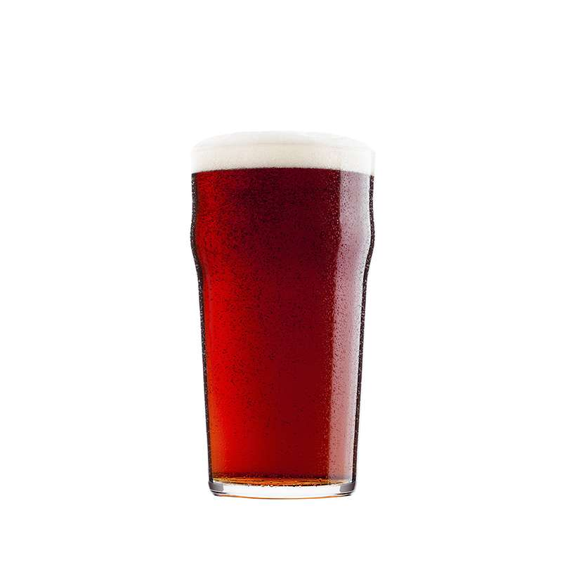

Estilos que hacemos

Golden Ale, estilo de origen Britanico, es una birra color dorada, suave, facil de tomar. Tiene pequeñas notas florales/citricas en aroma. Con un sabor tirando a lo maltoso. Es ideal para tomar en verano (va... en cualquier momento del año)
Irish Red, de origen tambien Britanico, es como lo dice su nombre, una cerveza roja, con notas caramelos, algunos frutos secos, de color rojizo intenso. Facil de tomar, bajo armargo y sabrosa en boca. Es un lindo estilo para cuando alguien quiere algo distinto.

Irish Extra Stout, birra bien oscura, de origen Ingles y con notas bien marcadas de tostado tanto en aroma como en sabor. Otras particularidades de este estilo, es de cuerpo medio, color bien oscuro(no traspasa la luz), sabores a chocolates, frutos secos, tostados y algunos caramelos. Excelente birra para tomar especialmente los dias de frio, pero siempre es disfrutable.

American Pale Ale (APA), es la variacion americana de la tan famosa Pale Ale Britanica. Aca podemos encontra un cuerpo de color claro, facil de tomar, bajo alcohol, aromas frutales tropicales muy presentes. Todas estas caracteristicas, hacen de esta birra ideal para cualquier momento y disfrutable.